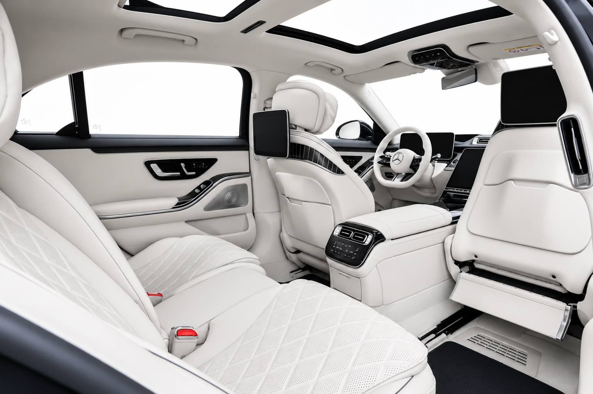

7h12. Le PDG d'un groupe industriel européen sort de son hôtel particulier dans le 8e arrondissement de Paris. Un véhicule l'attend. Son programme de la journée : une réunion au siège à La Défense à 8h30, un déjeuner confidentiel avec un partenaire américain à 12h30 dans un restaurant privé du 16e, une présentation à son conseil de surveillance à 15h, puis un vol depuis Le Bourget vers Munich à 18h45. Pendant ce temps, son assistante de direction coordonne depuis son bureau les déplacements de trois membres de son comex qui ont chacun un programme différent dans Paris.
Ce scénario n'est pas exceptionnel. C'est le quotidien de milliers d'entreprises qui ont compris que la mobilité des dirigeants est une fonction stratégique, pas un détail logistique à gérer au dernier moment. Et c'est précisément pour ces entreprises que B.LIFTED France a construit une offre de coordination corporate structurée, discrète et véritablement à la hauteur des exigences du niveau direction.
Ce guide s'adresse aux assistantes de direction, directeurs des ressources humaines, responsables de sécurité et directeurs administratifs qui organisent les déplacements de dirigeants et de délégations VIP. Il pose les bases d'une organisation mobilité qui libère la direction de toute préoccupation logistique et protège les informations sensibles associées à ses déplacements.
Ce guide est fait pour vous si…
- Vous êtes assistante de direction, DRH ou travel manager d'une entreprise dont les dirigeants se déplacent régulièrement
- Vos dirigeants ont des agendas Paris–Alpes–Côte d'Azur avec des impératifs d'exactitude et de confidentialité
- Vous gérez des délégations internationales qui arrivent en France (Dubaï, Londres, New York) et attendez une prise en charge sans faille dès la sortie d'avion
- La confidentialité des déplacements est un impératif — pas une option
- Vous cherchez un partenaire avec qui établir un accord-cadre plutôt que de repartir de zéro à chaque mission
La mobilité des dirigeants : une question stratégique, pas logistique
La première chose que toute entreprise sérieuse doit comprendre sur la mobilité de ses dirigeants, c'est que ce n'est pas un poste de coût à optimiser. C'est un investissement dans la productivité, la sécurité et l'image de l'entreprise.
La productivité d'abord. Un dirigeant qui est dans un véhicule géré par un coordinateur professionnel travaille pendant le trajet : il prépare sa réunion, il téléphone à un investisseur, il signe des documents. Un dirigeant qui gère lui-même sa logistique de déplacement, qui attend une voiture commandée trop tard, ou qui improvise ses transferts ne travaille pas — et une heure d'un CEO ou d'un DG vaut bien plus qu'une prestation de coordination de qualité.
La sécurité ensuite. Les déplacements des dirigeants contiennent des informations extrêmement sensibles : qui ils rencontrent, quand, où, avec quelles personnes. Dans un contexte d'espionnage économique et d'intelligence compétitive active, la gestion des informations relatives aux déplacements d'un PDG ou d'un membre de comex est un enjeu de sécurité réel. Un prestataire de mobilité professionnelle comprend cette dimension et la traite avec les protocoles adaptés.
L'image enfin. La façon dont un dirigeant arrive à une réunion envoie un message. Arriver dans un véhicule impeccable, à l'heure, sans stress apparent, contribue à l'autorité et à la crédibilité du dirigeant. Arriver en retard dans un véhicule mal coordonné envoie un message inverse.
Ce qui arrive quand la coordination est insuffisante
- Un PDG arrive en retard à une réunion stratégique parce que le véhicule a été commandé sans tenir compte du trafic à La Défense un lundi matin
- Des informations de déplacement circulent entre les coordinateurs sans NDA, exposant des rencontres confidentielles
- Une délégation internationale atterrit à CDG sans prise en charge coordonnée — premier contact catastrophique avec la France
- L'assistante de direction passe ses matinées à coordonner quatre prestataires différents au lieu de se concentrer sur son cœur de métier
Les exigences spécifiques d'une délégation VIP internationale
Coordonner les déplacements d'une délégation VIP internationale — un groupe de dirigeants venant pour un comité de direction, un closing de transaction ou un séminaire stratégique — est l'une des missions les plus complexes de la mobilité corporate.
La complexité vient de plusieurs facteurs simultanés.
Les arrivées échelonnées. Les membres d'une délégation internationale arrivent rarement en même temps. Certains viennent de Francfort, d'autres de Londres, d'autres de Singapour. Certains sont en vol commercial, d'autres en jet privé. Coordonner les arrivées à CDG, au Bourget et parfois à Orly dans la même journée, avec des véhicules dédiés pour chaque groupe et un coordinateur chef de file qui surveille tous les vols simultanément, est une opération qui ne tolère aucune approximation.
Les besoins individuels hétérogènes. Dans une même délégation de 12 personnes, vous aurez peut-être un membre qui a besoin d'une berline individuelle (il doit passer un appel confidentiel pendant le trajet), deux membres qui peuvent partager un van, un membre qui doit faire un détour par un hôtel pour récupérer des documents, et un membre dont les habitudes culturelles imposent certaines précautions dans la configuration du véhicule. Un service de coordination professionnel anticipe et gère tous ces besoins individuels sans les standardiser à la baisse.
Les impératifs de confidentialité croisée. Au sein d'une même délégation, certains membres ne savent peut-être pas tous les déplacements des autres. Les discussions de transaction font partie des informations les plus sensibles du monde des affaires. Le coordinateur terrain ne doit jamais, involontairement ou volontairement, être un vecteur de diffusion d'informations entre les membres d'une délégation.
La réactivité aux changements de programme. Un closing qui s'étire, une réunion qui dure plus longtemps que prévu, un membre qui doit partir plus tôt — les changements de programme dans une délégation de dirigeants sont la règle, pas l'exception. La coordination doit être suffisamment flexible pour absorber ces changements sans remettre en question l'ensemble du dispositif.
Comment coordonner les déplacements d'un comité exécutif sur 3 jours
Pour illustrer concrètement ce que signifie une coordination de niveau corporate, prenons le cas d'un séminaire de comex de 3 jours entre Paris et Megève — un scénario de plus en plus courant pour les grandes entreprises qui cherchent à combiner réflexion stratégique et ressourcement alpin.
Jour 1 — Arrivées à Paris et départ vers Megève. Le comex est composé de 10 membres. Quatre arrivent à CDG en vols commerciaux entre 10h et 14h. Deux arrivent au Bourget en jet privé à 11h30. Les quatre autres sont déjà à Paris. B.LIFTED positionne trois véhicules à CDG (deux berlines et un van pour les arrivées groupées), un véhicule au Bourget avec accès FBO, et un coordinateur central qui gère les appels entrants depuis Paris. À 15h30, les 10 membres sont réunis au siège pour un briefing court, puis embarquent dans un convoi coordonné vers Megève (3 Mercedes Classe V et 2 Mercedes Classe S). Arrivée au chalet vers 20h30, dîner à 21h.
Jour 2 — Déplacements internes sur Megève. Programme de la journée : réunion plénière le matin dans le chalet, déjeuner dans un restaurant privatisé à 10 minutes, atelier d'après-midi au spa d'un hôtel voisin, dîner en ville. Deux membres ont des appels urgents avec leurs équipes et ont besoin de se déplacer indépendamment. Le coordinateur dédié gère ces micro-déplacements en temps réel, maintient les véhicules en alerte permanente, et assure que chaque membre arrive à l'heure à chaque point du programme.
Jour 3 — Retours échelonnés. Les 10 membres ne repartent pas au même moment ni par les mêmes voies. Certains rentrent à Paris (coordinations vers Genève-Cointrin pour vols directs, vers Lyon-Saint-Exupéry pour d'autres connexions), certains continuent vers Cannes ou Monaco directement depuis les Alpes, un membre a un vol vers New York depuis CDG le soir. B.LIFTED établit un plan de retours individualisés qui optimise les horaires tout en respectant les préférences de chacun.
Vous organisez un séminaire de direction ou un déplacement de délégation ? Parlons de votre programme en détail.
Discuter de votre projet →Discrétion et sécurité : ce que signifie véritablement 'confidentialité' dans notre métier
Le mot "confidentialité" est galvaudé dans le secteur de la mobilité de luxe. Tous les prestataires l'utilisent. Très peu ont les protocoles pour l'assurer véritablement. Voici ce que cela signifie concrètement chez B.LIFTED.
La confidentialité des informations de trajet. Les noms des passagers, leurs destinations, leurs horaires et les personnes qu'ils rencontrent ne circulent jamais en dehors d'un cercle restreint défini avec le client. Aucune information n'est partagée par email non sécurisé, aucun nom n'est mentionné lors de communications radio, et les feuilles de route papier sont systématiquement détruites après la mission.
La confidentialité comportementale des coordinateurs. Un coordinateur B.LIFTED qui accompagne un dirigeant à une réunion d'affaires ne sait pas l'objet de cette réunion — et ne cherche pas à le savoir. Ce qu'il entend dans le véhicule reste dans le véhicule. Cette culture de la discrétion ne peut pas être enseignée en une journée de formation : elle doit être intégrée dans le recrutement et la sélection des coordinateurs.
La gestion des données de déplacement. Les données de géolocalisation et les historiques de déplacement sont des informations sensibles. Elles ne sont pas conservées au-delà de la durée nécessaire à la facturation, ne sont pas partagées avec des tiers, et sont stockées selon des protocoles qui respectent les exigences RGPD et les pratiques de sécurité corporate.
La coordination avec les équipes de sécurité corporate. Pour les dirigeants qui bénéficient d'une protection rapprochée, B.LIFTED coordonne directement avec le responsable de sécurité. Les trajets sont planifiés en tenant compte des contraintes de contre-surveillance, des itinéraires alternatifs et des protocoles de communication définis par l'équipe de sécurité. Notre rôle est de compléter le dispositif de sécurité, pas d'interférer avec lui.
- Application grand public — aucune connaissance du dirigeant ni de ses habitudes
- Pas de NDA — les informations de déplacement ne sont pas protégées contractuellement
- L'assistante gère plusieurs prestataires, coordonne à la main, absorbe les imprévus
- Standards de service variables selon le prestataire et la date
- Rebriefier le prestataire à chaque nouvelle mission depuis zéro
- Coordinateur dédié qui connaît les habitudes, préférences et contraintes de chaque dirigeant
- Confidentialité contractuelle — NDA signé, données de déplacement sécurisées
- L'assistante envoie un message — B.LIFTED gère tout le reste
- Standards identiques sur toutes les zones : Paris, Megève, Côte d'Azur, Dubaï
- Accord-cadre : votre contexte est connu, la mission démarre immédiatement
Le rôle de l'assistante de direction dans la coordination mobilité
Dans la plupart des grandes entreprises, c'est l'assistante de direction — ou l'équipe d'assistantes — qui est le véritable pivot de la coordination mobilité des dirigeants. Ce sont elles qui connaissent les préférences du DG, qui gèrent les changements de programme, qui communiquent avec les prestataires, et qui portent la responsabilité de s'assurer que les déplacements se déroulent sans accroc.
B.LIFTED a construit son offre corporate en tenant compte de cette réalité. Notre interlocuteur principal, c'est l'assistante de direction. Elle a un accès direct à notre coordinateur référent, disponible immédiatement en journée et en dehors des heures de bureau pour les urgences. Elle n'a pas à passer par un centre d'appel, à expliquer le contexte à un opérateur qui ne connaît pas l'entreprise, ni à attendre une confirmation sous 2 heures pour une demande urgente.
Nous proposons également un système de programmation anticipée qui permet à l'assistante de direction de nous confier l'ensemble du planning de déplacement d'une semaine ou d'un séjour en une seule communication, avec des alertes automatiques en cas de changement de vol, de météo adverse ou de trafic exceptionnel qui affecte les trajets prévus.
Pour les assistantes qui gèrent simultanément les déplacements de plusieurs dirigeants — situation courante dans les grandes entreprises — nous pouvons établir un tableau de bord partagé simple (non numérique si la politique de sécurité l'impose) permettant une vision d'ensemble de tous les déplacements en cours sur une période donnée.

Mercedes Classe S · cuir Nappa · vitres teintées · discrétion absolue
« La mobilité d'un dirigeant, c'est la première chose dont il ne doit pas avoir à s'occuper. C'est notre travail de faire en sorte qu'il n'y pense jamais. »
Mettre en place un accord-cadre avec B.LIFTED pour votre direction
Pour les entreprises qui ont des besoins réguliers de mobilité corporate — plusieurs missions par mois ou une activité saisonnière intense — un accord-cadre présente des avantages significatifs par rapport aux réservations ponctuelles.
Un coordinateur référent identifié. Votre assistante de direction a toujours le même interlocuteur chez B.LIFTED. Cette personne connaît votre entreprise, vos dirigeants, leurs préférences, et l'historique de vos missions passées. Elle n'a pas besoin d'être réintroduite à chaque nouvelle demande.
Une disponibilité prioritaire. En haute saison (été sur la Côte d'Azur, hiver dans les Alpes, Fashion Week et grands événements à Paris), les prestataires de qualité sont pris d'assaut. Les entreprises partenaires de B.LIFTED bénéficient d'une priorité sur les disponibilités qui garantit une réponse positive, même en période de forte demande.
Des conditions tarifaires adaptées au volume. Un accord-cadre permet de définir à l'avance des conditions tarifaires stables, sans surprise à chaque mission. Ce prévisibilité facilite la gestion budgétaire des frais de mobilité et simplifie les processus de validation interne.
Une documentation simplifiée. Factures mensuelles consolidées, références de projet conformes à votre nomenclature interne, formats de reporting adaptés à vos outils de gestion — nous adaptons notre documentation à vos processus, pas l'inverse.
La mise en place d'un accord-cadre commence par un échange de 30 minutes avec votre directeur administratif ou votre responsable achats. Cet échange permet de qualifier vos besoins, de définir les paramètres du partenariat et d'identifier les interlocuteurs des deux côtés. Le contrat peut être opérationnel en une semaine.
« Un accord-cadre, c'est l'assurance que votre direction ne perd jamais de temps avec la logistique de sa mobilité — et que vos assistantes n'ont jamais à improviser. »
« Nos dirigeants n'ont plus à attendre, n'ont jamais à s'expliquer deux fois. B.LIFTED connaît leurs préférences, leurs habitudes, leurs contraintes. C'est devenu une évidence dans notre organisation. »
Questions fréquentes
Pour une délégation de 15 personnes, nous recommandons un mixte de berlines individuelles pour les membres seniors et de vans Mercedes Classe V pour les groupes moins formels. Un coordinateur chef de file supervise l'ensemble depuis le point de départ à Paris jusqu'à l'arrivée à Megève. Les bagages sont gérés séparément si le volume l'exige. Tout l'itinéraire est validé la veille avec les assistantes de direction.
Oui, c'est notre service de coordinateur dédié. Une seule personne accompagne la délégation pendant l'intégralité du séjour — de l'aéroport à chaque déplacement quotidien, jusqu'au retour. Ce coordinateur est disponible à toute heure, connaît le programme complet et peut anticiper et gérer tous les imprévus sans solliciter la direction ou les assistantes.
La confidentialité repose sur plusieurs protocoles : aucune information de trajet communiquée en dehors du cercle strict autorisé, véhicules sans identification externe, coordinateurs formés à la discrétion et soumis à un engagement de confidentialité contractuel, communications internes par canaux sécurisés. Sur demande, nous coordonnons avec l'équipe de sécurité du dirigeant.
Un service de coordination corporate est une prestation de gestion de la mobilité globale : planification sur plusieurs jours, gestion des imprévus en temps réel, coordination entre plusieurs membres d'une même équipe, liaison avec les assistantes de direction et les équipes de sécurité, documentation complète pour les notes de frais. Un service ponctuel ne propose pas cette vision d'ensemble ni cette capacité de réaction.
Les modifications de planning sont la norme dans la mobilité de direction. Notre organisation est structurée pour absorber ces changements sans délai : coordinateur en veille permanente sur son programme, véhicules supplémentaires pré-identifiés, délai de réactivité de 15 minutes pour toute modification urgente. Une demande à 22h pour un départ à 6h est traitée dans les mêmes conditions qu'une demande en journée.
Oui. C'est une situation fréquente lors de séminaires de direction. Nous établissons un plan de coordination global qui intègre tous les programmes individuels, avec des véhicules dédiés pour chaque groupe ou sous-groupe, et un coordinateur chef de file qui supervise l'ensemble et peut réallouer des ressources en temps réel si nécessaire.
B.LIFTED émet des factures détaillées avec la date, l'heure, le type de prestation et la référence interne que vous nous communiquez. Pour les entreprises avec des processus formalisés, nous adaptons le format de nos factures à vos besoins. Une facturation mensuelle consolidée est disponible pour les partenaires avec un volume régulier d'activité.
Un contrat annuel définit les conditions tarifaires, les délais de réservation minimum, les procédures d'urgence et les interlocuteurs référents des deux côtés. Il inclut généralement un coordinateur référent dédié, une priorité sur les disponibilités en haute saison et une facturation mensuelle consolidée. Un premier échange de 30 minutes avec votre directeur administratif suffit pour lancer le processus.
Conclusion
La mobilité des dirigeants est une compétence organisationnelle que les entreprises les plus exigeantes ont décidé d'externaliser à des partenaires spécialisés — non pas pour s'en débarrasser, mais pour la porter au niveau d'excellence qu'elle mérite.
Un dirigeant qui n'a jamais à penser à son prochain déplacement, qui sait qu'un coordinateur compétent et discret gère chaque détail, peut concentrer toute son attention sur ce qui compte vraiment : ses dossiers, ses équipes, ses décisions. C'est précisément pour cela que la mobilité de direction est une question stratégique.
B.LIFTED France est disponible pour un premier échange sur les besoins de mobilité corporate de votre organisation. Contactez-nous directement au +(33) 6 36 01 72 35 ou à l'adresse contact@bliftedfrance.com. Premier échange sans engagement, réponse sous 24h.